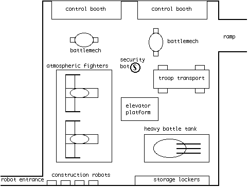

Shizlink's hidden computer file
Me find map of garrison in memory droid's. Friend Fairy cast
spell turn me invisible, cast other spell make me fly. Fairy turn Fairy
invisible, and fly we up ramp.
Me hit mother lode!!! Me find droids, battlemechs, air fighters,
battle tank! Me most powerful Goblin in universe!!!
Then me see Guard robot. Baddo guard robot come and steal it
all away. Guard robot see me not, me invisible. Me tell Friend Fairy tell
others me send droids down bring them up. Me try cast Rune of Marconi;
too much power not enough spell. [Editor's note: Shizlink fumbled his
spell and was knocked unconscious for a while. Fortunately he remained
invisible] Me Interface construction droid, program go bottom ramp,
wait, return. Me send droid down.
Me wait. Me wait. Me wonder what in storage locker. Me must
wait for droid. Me wait. Me can't wait no more, must know what in storage
locker! Locker locked, me try unlock. Lock no unlock. Guard robot head
for me! Must run! Guard robot scan locker. Guard robot no find me. Me invisible.
Me wonder what battle tank made of. Me try find out, run into
force field. Guard robot head for me! Must run! Guard robot still no find
me. Then alarm bells sound.
Me not like this. Me not like this one bit. Bad humans in control
room moving around, bad guard robots looking for me. Alarm bells ears hurt.
Must make diversion. Me program construction droid plaster over ramp other
side of depot. Me send droid. Baddo guard robot follow droid, tell droid
stop. Droid no can stop, me program droid priority override. Droid plaster
begins ramp. Guard robot destroy construction droid. Big boom!
Me run down ramp, back to friends. Me pass first droid on way
down, droid slow.
